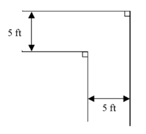
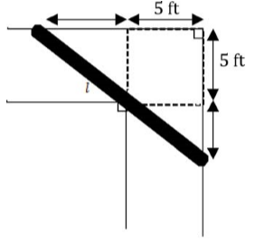
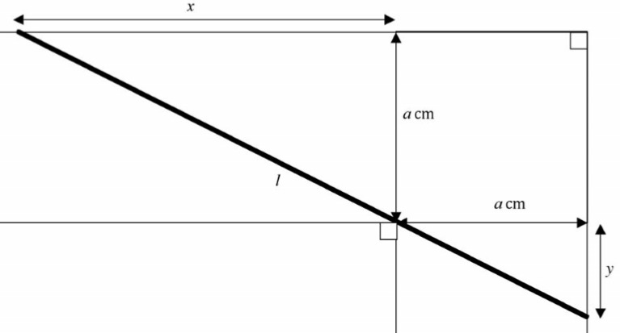
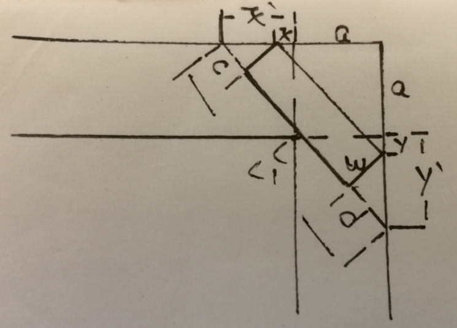
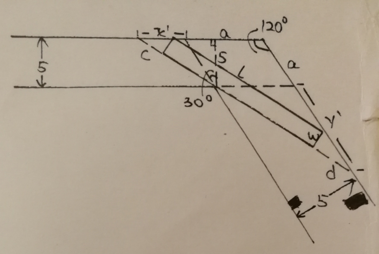
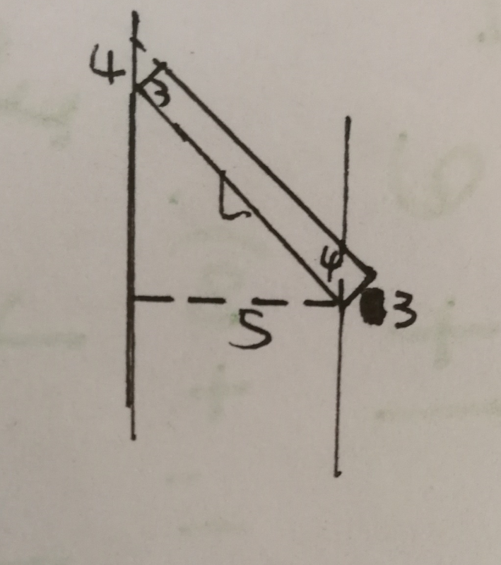
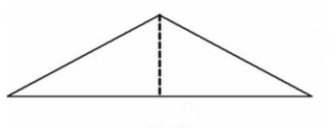
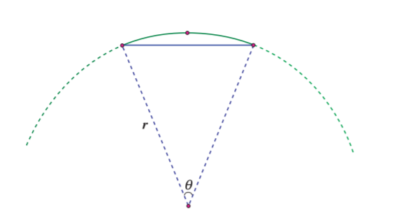
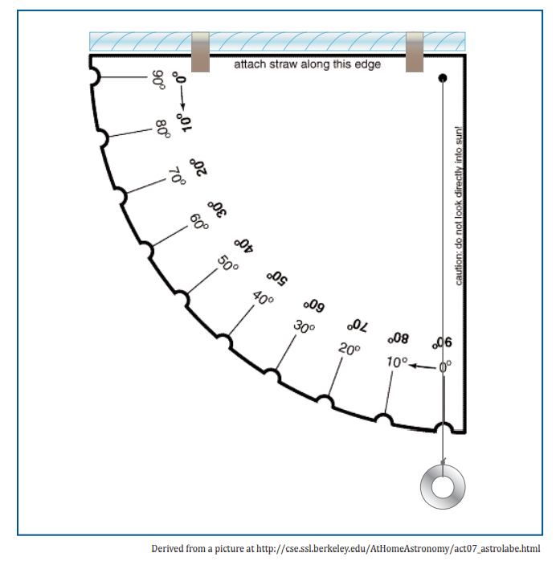
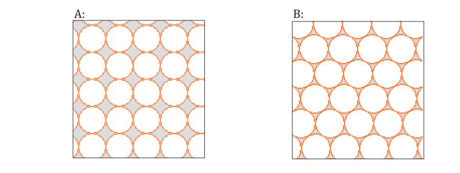

Modeling Handbook Notes
The graphs in the notes come from COMAP's Mathematical Modeling Handbook
The math notations I used here is similar to Python syntax for convenience.
Could King Kong Exist?
When a three dimensional object's dimensions are increased by a given factor n, the surface area increases by a factor of n**2 and the volume increases by n**3. The same principle applies to human beings. We can assume that all humans have similar body builds. When a man's height increases by a factor of m, the skin grows by a factor of m**2, and the weight grows by a factor of m**3.
Bone strength is proportional to crossectional areas of the bone. So if a man's height increases by a factor of m, his bone strength will grow by a factor of m**2. Since his weight will grow by a factor of m**3, assume the man's original bone strength is BS (measured in weights), if (BS * m**2) is less than (weight * m**3) then the man's bones will crumble.
A typical male gorilla weighs 375 pounds and is 68 inches tall. In Peter Jackson's 2005 remake of King Kong, the animal is said to be 25 feet (300 inches) tall. The growth factor is (300/68), so the weight of King Kong is 375 * (300/68)** 3 ~= 31943 pounds. The bone strength increases by a factor of (300/68)**2 ~= 19. Assume the bone strength of a male gorilla is BS, then to sustain the weight of King Kong, we need to have 31943 = 19 * BS => BS ~= 1681 pounds which is about 4.5 of the weight of a typical male gorilla. The largest gorilla captured is Gargantua. He weighs 550~600 pounds and he stood 66 inches tall. Based on the above information, it is highly unlikely that King Kong can exist.
By the same token, we can determine if Godzilla can exist. Godzilla is portrayed as weighing 50000 tons and 150 feet tall. If scaled down to 6 feet, he will weigh 3.2 tons (6400 pounds). This is not plausible because if we scale up Gargantua to 6 feet he will weigh about 779 pounds.
A Model Solar System
This question is about scaling down the planet and stars in the solar system and the mean distances so that we can visualize the solar system with everyday objects. The diameters of the four smallest planets and the diameters of the four largest form two clusters that are quite different in diameter. The mean distances from the Sun also span quite a large range and seeing any patterns on a regular piece of graph paper will be difficult.
A mathematical device that makes it easier to see the behavior of numbers spread widely is to plot logarithms of the numbers rather than the numbers themselves. For any set of data that varies over many orders of magnitude, such as the planets, the energies of earthquakes, or the annual incomes of families, plots of the logarithms of the data tend to be very useful. For example, if you see the log-log plot is a straight line, then you can derivate a linear relationship between the two logarithms, which may depict that y**m = a * x**n + b. We can use a log-log plot of orbital period of planets and their semi-major axis of orbits to derive Keplar's third law.
For the Birds
Your ornithologist neighbor is going out to do his bird research at the weekend and he wants to look after his birds. He gives you a birdfeeder with two pairs of feeding holes and perches equally spaced in a cylindrical shape. One pair at height 0 on the side of the feeder and the other pair is at height h/2 on the side of the feeder where h is the height of the feeder. Assume the birds come in constantly to eat when there is food in the birdfeeder. You need to determine exactly when is the best time to refill the birdfeeder. If you refill the feeder too often, you will scare away the birds, if you refill the feeder too seldom, the birds will not come to your neighbor's house to eat, which should make your neighbor mad.
The best time to refill the birdfeeder is when the birdfeeder is nearly empty. This is the time when you must refill the birdfeeder; otherwise you may have less birds coming for food or you may refill the birdfeeder a bit too often, which could scare the birds away. We need to approximate how soon the birdfeeder becomes empty after a refill so that we can refill the birdfeeder when it is nearly empty.
The easiest way to do it is to observe how long it takes for a full birdfeeder to be empty. The problem for this method is that you may need to spend a long time constantly watching the birdfeeder. We would like to model the how much food is in the birdfeeder at any given time after a refill so that we can spend a shorter time watching the birdfeeder, approximate the time it gets emptied and refill the birdfeeder without constantly watching it.
Suppose we refill the birdfeeder at time 0; we observe that it takes time t1 for the full birdfeeder to be half-full (i.e. the food went from height h to h/2). We assume the birds come in constantly to eat when there is food in the birdfeeder. During time 0 and time t1 they can eat from every feeding hole. After time t1, the birds can only eat from two out of four feeding holes because the height of food is less than h/2. Let r1 be the rate that birds consume food between time 0 and t1, and r2 be the rate that birds consume food between t1 and t2(t2 is the time when the birdfeeder is empty). We have 1 = r1 * t1 + r2 * t2, r1 = 2 * r2, and 1/2 = r1 * t1. Here "1" means the total amount of bird's food in the birdfeeder when it's full. With the three formulas, we can first solve for r1, and then we can solve for r2, and t2; (t1 + t2) will be the total time it takes for a full birdfeeder to be empty.
If now we have a bigger birdfeeder that has 3 pairs of feeding holes and perches equally spaced in a cylindrical shape. How to extend our model to this birdfeeder? Suppose we refill the birdfeeder at time 0; we observe that it takes time t1 for the full birdfeeder to be 2/3-full. Let r1 be the rate that birds consume food between time 0 and t1, r2 the rate that the birds consume food between t1 and t2(t2 is the time when the birdfeeder is 1/3-full), and r3 the rate that the birds consume food between t2 and t3(t3 is the time when the birdfeeder is empty). We have 1 = r1 * t1 + r2 * t2 + r3 * t3, r1 = 3 * r3, r2 = 2 * r3, 2/3 = r1 * t1 + r2 * t2, and 1/3 = r1 * t1. We can first solve for r1, and then r3, r2 and t2. After that we can solve for t3 and (t1 + t2 + t3) will be the total amount of time it takes for a full birdfeeder to be empty.
The general formula: F = r1 * t1 + r2 * t2 + ... + rN * tN can be used to solve another type of problem: craft problem. You have taken a job to make origamis in 5 days. You invited 4 friends to help you with your job but not all of them are available during the 5 days. You have all 4 friends available on the first day, 3 friends on the second day, 2 friends on the third, 1 friend on the fourth and 0 friend on the fifth. Assume everyone has the same workrate r0 and the five of you made 300 origamis at the end of the first day. How many origamis can you guys make in total?
If we want to draw a graph to visualize the amount of food at any given time t after a refill, we will end up having a graph with connected line segments. If we further define this function, we will have a piecewise function.
On Safari
You have a 4-hour trip to an African jungle where you can see many different species. The problem is that when you are at one viewing spot, the species may not appear. So you need to wait. Remember you only have 4 hours, so the time you spend on one spot may affect the time you spend on other spots or affect the total species you can see. If you spending too little time on a spot, you may not have a sighting before you leave. If you spend too much time on a spot, you are more likely to have a sighting, but you don't have much time for other spots. To make things worse, the viewing spots are too far away from each other, so you cannot flexibly allocate your time and you need to tell your tour guide what species you want to see and how long you are staying there before you begin your safari. So given last year's viewing history, how would you like to allocate your time so that you can see as many species as you can?
The viewing history has the following data: for each different length of time in minutes, the number of groups stayed at one spot and the number of groups that had a sighting in the end. Since it is not guaranteed that you can have a sighiting, and you need to decide the amount of time to stay before safari begins, you need to maximize your chances per minute to try to see as many species as possible. That way, each minute is planned optimally. In the end you may not see as much species as expected, but at least your plan is optimal and you end up seeing more species than others who don't come up with the same plan unless they are much luckier than you are.
The first step to do is to compute the probability of having a sight when staying at a spot for each possible length of time t. We denote it as p(t). The next thing to do is to compute p(t)/t for each possible length of time t and pick the length of time tO that has the largest p(t)/t. The next thing to do is to allocate time slots of tO for each spot until the remaining time of your 4 hours is shorter than tO. In this case, if the remainder is 0, then you are done. Otherwise, you can repeat the above process to allocate your remainder until the remainder is 0.
Similar technique can be applied in microeconomics. You have a limited amount of dollars to spend and you hace a range of things you can buy. How to optimally spend your money to have the highest benefit (or pleasure) if you can measure it somehow? You will need to maximize the benefit/dollar. The technique can also be used in air defense and attack. You have a few targets to take down but you only have a limited number of bombers. Each bomber alone can wipe out the target but also has a chance of being shot down. So you can compute the probability Pk(b) of wiping out a target using b bombers. You need to allocate the bombers optimally to wipe out as many targets as possible, so you can now optimize Pk(b)/b to make your decision. For the defensive end, the country should try to make the optimum b as large as possible to save as many targets as they can.
Choosing A College
This question is about how to make a decision when picking and choosing which college to apply or to attend.
We can use a methond called decision matrix to help us come up with a final decision. Here are the steps:
- List the schools from which you want to pick and choose.
- List the features/aspects/criteria you want to take into account. For example, Financial Aid, Academics, Location
- For each feature, do your research to find out how well your desired schools are doing. And rate them using a scale of 0~5. A school having a 5 under one criterion means it meets the criterion perfectly whereas a school having a 0 under one creterion means it does not meet the criterion at all. You will end up having a table/matrix M of the schools and their scores under each criterion.
- For each feature, provide your preference. If you have 1 point, how would you like to allocate fractions your point to each criterion? You will end up having a list/vector P of your pereferences.
- Calculate the final score of each school. Suppose you have N features m1, m2, ..., mN. And you have your preference of each feature p1, p2, ..., pN where p1 + p2 + ... + pN = 1. One school's final score = m1 * p1 + m2 * p2 + ... + mN * pN. The score table/matrix for the schools S = M * P.
- Pick the school with the highest final score.
Different preference vectors yield different results. In fact we can determine under which peference vectors a school will be picked. This is essentially a linear/non-linear programming problem with the variables being the preferences and target function being none. For example, if you have only 3 criteria and your peferences being (x, y, z). We know that z = 1 - x - y. So if school A has rating (5, 4, 2), we can draw a line representing the score of this school s1 = 5x + 4y + 2(1 - x - y). We can draw lines representing other schools, list the constraints based on your goal (e.g. school A tops) and we can figure out which (x, y) pairs will put school A on the top. Since z = 1 - x - y, we can figure out which (x, y, z) vectors will put A on the top.
A Tour of Jaffa
This question is about route planning. Assume you are going to visit a place for your vacation. You have some tourist attractions you want to see. How are you going to plan your route so that you have time to visit all of them?
First of all, you need to find a way to represent the places you want to go and show a route. One way that mathematicians would show a route is to ues a graph. These are not the types of graphs that you usually think of, though. These graphs have two important features: vertices (these usually are drawn as points or dots and they represent something of interest) and edges (lines connecting the vertices; they are used to show some relationship between the vertices they connect). The edges have weights. The weight can be the distance between two vertices (i.e. places of interest) or the estimated travel time between two vertices.
Since we want to have time to visit all of the places we want to go, we need to look for a route that is most efficient, meaning that it takes the least time to travel. The route should not only cover all the places we want to go, but also start and end at the same place, the place we live during the vacation. A route (also known as a path) that starts and ends at the same vertex and visits each vertex in the graph exactly once until ending at the starting point is called a Hamilton circuit, and the problem of looking for the mose efficient Hamilton circuit is a famous mathematical problem called the Travelling Salesman Problem (TSP). There is an algorithm (a set of steps) to find some very efficient Hamilton circuits.
The algorithm has three requirements:
- The cost of going between two vertices is the same in either direction. (The cost is symmetric.)
- The cost of going from vertex A to vertex B is less than or equal to the cost of going from vartex A to vertex C to vertex B. (The cost fuifill the triangle inequality.)
- Each vertex is connected by an edge to every other vertex. (The graph is complete.)
Most often, the cost is the edge weight. And we will denote the cost from vertex A to itself to be positive infinity to avoid the algorithm stucking in one vertex forever. The following algorithm helps to determine near-minimal routes.
- Pick any vertex as a starting point for a circuit C1 consisting of 1 vertex.
- Given the circuit Ck with k vertices and k >= 1, find the vertex Zk not in Ck that is closest to a vertex in Ck; call the vertex in Ck that Zk is closest to Yk.
- Let C(k+1) be the circuit with (k + 1) vertices obtained by inserting Zk immediately before Yk in Ck.
- Repeat steps 2 and 3 until a Hamilton circuit (containing all vertices) is formed.
Using this algorithm we can get a nice solution. But how nice is the solution. We need to find a way to evaluate the solution and the way that is used here is to find a lower bound of this problem and see how close the solution is to the lower bound. But how to determine the lower bound of TSP? We use what's called an adjacency matrix to represent the graph. The adjacency matrix is essentially a table that represents the cost of moving between any two vertices on the graph. With the adjacent matrix, we can see that on each row, there is a smallest number. This number actually means that this is the lowest cost you need to pay in order to go to another place from this point. We add up the smallest number on each row and we subtract the costs on each row by the lowest cost of the row. We end up having a number (call it u) and another matrix. We can see that the matrix we end up with has a route with cost at least zero. So the minimal route using the original adjacency matrix is u. If the total cost of the route we come up with is close to u (for example, smaller than 2 * u), then we say we have a nice solution.
Gauging Rainfall
This question is about gauging the average rainfall in a given rectangular territory. We use rain gauges to measure rainfall. And since the territory is often large and of different altitude, it is highly unlikely to place rain gauges densely throughout the territory. To determine the average rainfall based on the limited gauges we have, we need to use the following assumption: The depth of rainfall is the same near one gauge.
But this assumption is vague because we don't know how big the "influence" a gauge can have. Or which region in the territory has the depth of rainfall of which gauge. Given a set of rain gauges in a given territory, we need to find each gauge's "region of influence". To do this, we use Voronoi diagrams.
In mathematics, a Voronoi diagram is a partition of a space as a set of discrete polygons. Each region contains one "center of influence". The other points in the interior of a polygon represent all the points that are closer to that polygon's point of interest than any other point of interest. In meteorology, Voronoi diagrams are also called Thiessen polygons.
The position of each gauge is treated as a "center of influence". We construct a Voronoi polygon for each gauge and compute the area of each Voronoi polygon. A Voronoi polygon can be viewed as a combination of a few triangles so we can compute the area of each triangle and add up the areas to get the area of a Voronoi polygon. We can further compute the percentage of area of the territory covered by each Voronoi polygon and the average depth of rainfall in the territory is the weighted average of the depth of each rain gauge with the weight of each gauge being the percentage of area of the territory covered by its Voronoi polygon.
The ideas in this model have been used in building understanding in a surprisingly large number of situations. One of the earliest that is often cited was in determining a likely source of the Broad Street cholera outbreak in London in the mid-1850s. It was determined that each of a large number of victims lived closer to a particular water pump than to any other and this pump was then determined to be the source of the infection.
An interesting problem with a given Voronoi diagram is to recover the centers of each individual region given the boundaries, as distinguished from the original problem of finding the polygon boundaries given the centers. One method that might particularly appeal to those with an interest in algorithms is as follows: Pick a location X that seems likely to be close to the center you are trying to find. Then its reflection in one of the edges should be close to the center of that polygon. Keep doing this as you "go around" a corner at which polygons meet until you get to your original polygon. If X′ = X, then your direction from the corner A is correct. If X′ ≠ X, pick a new guess halfway in between X′ and X and try again. You will rapidly approach the correct direction from A. Then do the same process around an adjacent corner B. You then know the direction from A to the center and the direction from B to the center. Together they determine the location of the center.
In computer science, Voronoi diagrams can also be used in computing minimal spanning tree. It can be proved that if vertex A and vertex B are directly connected in the minimal spanning tree then the Voronoi polygons centered at A and at B share an edge. So if the Voronoi polygons centered at A and at B doesn't share an edge, then vertex A and vertex B are not directly connected in the minimal spanning tree. We can use this rule before applying the Kruskal or Prim's algorithm to reduce the time spent on finding the minimal spanning tree by ruling out some of edge AB.
As a practical matter, computing the Voronoi diagrams for a given set of vertices is not cheap, but for large numbers of vertices it is quicker than the full Kruskal and Prim algorithms. So it would pay you to do this computation –-but only for a problem with many vertices.
Narrow Corridor
This question is about moving a newly bought sofa into the apartment. Before we go out to purchase a piece of furniture for a new house/apartment, we will need to measure the size of our front door so that what we buy can be carried into the house/apartment. In the case of buying furniture for a new house, the size of the door is all that we need to measure. Whereas in the case of buying furniture for a new apartment, we also need to take into account the dimensions of the corridor. Otherwise we may not be able to move the furniture around the corners of a corridor. Let's say we want to purchase a sofa. Given the dimensions of the sofa (3 feet wide, 9.5 feet long, and 3 feet high), and the dimensions of the corridor corner (See the floor plan below. The ceiling is 9 feet above the floor), we need to determine whether the sofa can be moved around the corner.

Think of the sofa as a cuboid, when we are trying to move it around the corner, we can carry it horizontally or we can tilt it. But simply picturing the action of moving it horizontally around the corner is already a little mind-boggling. So we need to start out with a similar but simpler problem, or a special case so we can know about what needs to be considered, how to tackle the problem and later on generalize the special case and reuse the method we used to solve the special case to solve the actual problem. In this question, the special case will be carrying a pipe around the same corridor corner. The pipe's width and height are way smaller compared to those of the corridor so we can assume that the width and height of the pipe is negligible. And since we can move it horizontally or tilt it but it is easier to move it horizontally, we can first consider moving the pipe horizontally around the corridor.
When carrying the pipe horizontally around the corner of the corridor, we know that if the pipe is too long, it will be stuck at the corner as shown below. If we can find the length of the shortest pipe that gets stuck at the corner, we can use this length to determine whether we can carry a pipe around the corner horizontally. Let this length be L_0. If the length of the pipe we are to carry is greater than L_0, then we can say that the pipe cannot be carried around the corner horizontally.

Let's find L_0 by investigating the relationship among l, y, and x in the figure below and suppose a is the width of the corridor. By the Pythagorean Theorem, l**2 = （x + a)**2 + (y + a)**2. By similar triangles, a / y = x / a => y = a**2 / x. Therefore, l**2 = (x + a)**2 + (a**2 / x + a)**2. Since (x + a)**2 + (a**2 / x + a)**2 >= 2 * (x + a) * (a**2 / x + a) with equality only when ((x + a) = a**2/x + a). In this question a = 5. When we plug in a = 5 then we get l**2 = (x + 5)**2 + (25/x + 5)**2. When (x + 5 = 25/x + 5) => x = 5, l has a mimimum 10*sqrt(2). That means when a = 5 feet, L_0 is 10*sqrt(2) feet. We can also plot l(x) = sqrt((x + a)**2 + (a**2 / x + a)**2) to find the minimum.

If we can tilt the pipe, then the length L_1 of the shortest pipe that gets stuck at the corner satisfies L_1**2 = L_0**2 + h**2 by the Pythagorean Theorem where h is the height of the ceiling. In this question h = 9, then L1 = sqrt(L_0**2 + 81) ~= 16.8 feet.
Now let's use the above method to approach the actual problem. If we can only move the sofa horizontally, when the sofa gets stuck at the corner, we can have the problem setting and terminology as shown in the figure below. We can see that l = l' - (c + d). We can use the relationship among l, y, and x we previously determined and apply it to l', y', and x' so we have l'**2 = (x' + a)**2 + (a**2/x' + a)**2. By similar triangles, we have w / a = c / x' => c = w * x' / a, and w / a = d / y' => d = w * y' / a => d = 3 * a / x' since y' = a**2 / x'. Therefore, we have l = sqrt((x' + a)**2 + (a**2/ x' + a)**2) - ((w/a)*x' + (w*a)/x') where a = 5 and w = 3 feet in this problem. We can plot l(x') to find the minimum. When x' ~= 5, l has a minimum L_0 ~= 8.14 feet. Since the sofa is 9.5 feet long, if we can only move the sofa horizontally, we should not buy the sofa.

If we can tilt the sofa, then we should have the problem setting and terminology as shown in the figure below when the sofa just gets stuck at the corner (i.e. the sofa has length l = L_1). Suppose the vertical edge at the top left corner has length x, by using Pythagorean Theorem, the horizontal edge at the top left corner has length sqrt(w**2 - x**2). By congruent triangles, the vertical edge at the bottom right corner has length x and the horizontal edge at the bottom right corner has length sqrt(w**2 - x**2). Therefore, we can derive that l**2 = (L_0 - sqrt(w**2 - x**2))**2 + (h - x)**2 by using Pythagorean Theorem and l / w = (h - x) / sqrt(w**2 - x**2) => l**2 = (w**2 * (h - x)**2) / (w**2 - x**2) by similar triangles. So we have (L_0 - sqrt(w**2 - x**2))**2 + (h - x)**2 - (w**2 * (h - x)**2) / (w**2 - x**2) = 0. In this question, l = L_1, L_0 ~= 8.14, w = 3, and h = 9. We can use the bisection method to find that x ~= 1.90 and L_1 ~= 9.18. Since the sofa is 9.5 feet long, we should not buy the sofa.

We can't move the sofa around the corner of the corridor in this problem. But what if the corner of the corridor had an angle of 120 degrees instead of 90? In this case we will have the problem setting and terminology as shown in the figure below if we can only move the sofa horizontally. We till have l = l' - (c+d) and we can still use similar triangles to derive that c = w * x' / a and d = w * a / x'. But instead of using Pythagorean Theorem, we use the law of cosines to derive that l'**2 = (x' + a)**2 + (a**2/x' + a)**2 - 2 * (x' + a) * (a**2/x' + a) * cos(2*pi/3) = (x' + a)**2 + (a**2/x' + a)**2 + (x' + a) * (a**2/x' + a). Therefore, l = sqrt((x' + a)**2 + (a**2/x' + a)**2 + (x' + a) * (a**2/x' + a)) - (w*x'/a + w*a/x'). In this question, a = 10/sqrt(3) (i.e. 5 / cos(pi/6)), w = 3. We can plot l(x') to find the minimum. When x' = 10/sqrt(3), l has minimum L_0 ~= 9.61.

If we can tilt the sofa, we still have (L_0 - sqrt(w**2 - x**2))**2 + (h - x)**2 - (w**2 * (h - x)**2) / (w**2 - x**2) = 0. In this problem L_0 ~= 9.61, w = 3, h = 9. We use bisection method to find that x~= 2.24 and L_1 ~= 10.18 feet. Since the sofa is 9.5 feet long, which is less than 10.18, we can buy the sofa when the corner has an angle of 120 degrees.
Even though we move our sofa around the corner of the narrow corridor, it doesn't mean that we can move the sofa into the apartment. We still need to determine if the sofa fits through the door. Assume the corridor is 5 feet wide. The width of the door is 4 feet and its height is 8 feet.
When the sofa just gets stuck at the door horizontally (i.e. the sofa has length L_0), we have the problem setting and terminology as shown in the figure below. By similar triangles, we have l/d_w = a/w => l = (a/w)*d_w where l is the length of the sofa, d_w is door width, a is the width of the corridor and w is the width of the sofa. In this problem a = 5, d_w = 4 and w = 3. So l = L_0 = 20/3.

If we can tilt the sofa, we can still use equation (L_0 - sqrt(w**2 - x**2))**2 + (h - x)**2 - (w**2 * (h - x)**2) / (w**2 - x**2) = 0. In this problem w = 3, h = 8, L_0 = 20/3. We can use the bisection method to find that x ~= 1.64 and L_1 ~= 7.60 feet. That means even if we can move the sofa around the corner of the narrow corridor we cannot move the sofa into our apartment :(
Tale of the Tape
The problem is about determining the trajectory of a baseball thrown from a starting point. We assume that there is no resistence from the air and thus the trajectory of the ball is a parabola which can be determined given three points of the trajectory.
If we are given the starting point and the highest point of the trajectory, we can also determine the trajectory of the baseball and here is how we can do it.
Assume that a parabola has expression f(x) = a * x**2 + b * x + c (a, b, c are constants and a is less than 0). We are given two datapoints, (x1, y1) and its maximum point (h, ymax) and we would like to find a, b, and c. Since f'(x) = 2 * a * x + b. And f(h) = ymax. 2 * a * h + b = 0 and thus b = -2 * a * h. And because f(h) = a * h**2 + b * h + c = ymax => a * h**2 - 2 * a * h**2 + c = ymax, a = (c - ymax) / h**2. Since f(x1) = a * x1**2 + b * x1 + c = ((c - ymax) / h**2) * x1**2 - 2 * (c - ymax) / h**2 * h * x1 + c = y1, c = (y1 * h1**2 + ymax * x1**2 - 2 * ymax * h * x1)/(x1 - h)**2. Therefore, c = (y1 * h1**2 + ymax * x1**2 - 2 * ymax * h * x1)/(x1 - h)**2, a = (c - ymax) / h**2, and b = -2 * a * h.
We can apply the same math model in skeet shooting. The clay disk can be treated as another baseball which launches at a fixed spot, it also has a parabolic trajectory. We assume that the trajectory of the pellet is a straight line. Thus when the pellet hits the clay disk, the straight line intercepts the parabola. If we can determine the the speed of the pellet, the travel distance of the pellet, and the speed of the clay disk we can determine when to fire the gun.
Unstable Table
The problem is about stabling a unstable/wobbling 4-legged table by rotation. An unstable table is a table that does not have all of its legs touching the floor. When a table becomes unstable on the floor, there are mainly two possible causes. One cause is that the legs do not have the same length. Here is one one interesting method to determine whether the legs have the same length. We use strings, stretch them between the tips of each pair of opposite legs. If the strings do not bend when pulled taut, then the tips of the legs are coplanar, meaning that they are on the same plane. If the legs do not have the same length, we need to fold a napkin and place it under the shorter tip to stablize it just like what we usually see.
If the tips are coplanar, then that means the floor is uneven. In this case, we need to rotate the table to find if a place forms the same plane as the the tips defines to stablize the table. It may be a little complicated to directly approach the problem. So just like the narrow corridor problem, we would like to create a simpler model of the problem, solve it and try to generalize the solution to help solving the original problem.
We would like to model this problem in a two dimensional space as illustrated in the picture below. Here we assume that the legs of the table have the same length and it's the uneven floor that caused the trouble. With this problem setting, we replace the possible table movement to be sliding. For an unstable table of two legs, since any two points defines a line, we can guarantee that we can stablize the table without even sliding it because it sits on a line automatically. If we slide the table along the floor, we can see the slope of the line defined by the two leg tips changes. Sometime it can be positive, sometimes it can be negative. Since the floor is "continuous", meaning that there are no gaps that the table cannot be slided on, we can say that at some poing the slope of the line defined by the two leg tips will be 0. In fact, this is essentially the Intermediate Value Theorem. In this case, not only will the table be stable, but also it will be level.
If the table has three legs, then we need to do some sliding. Based on the case of the two-legged table, we can say that there should be two legs that are already touching the floor, all we need to do is to slide the table to let the third leg contact the ground. Here comes a problem, how do we know mathematically that the third leg touches the floor?
We would like to use the slopes of lines to help us determine if all three legs touch the floor. Assume that the tips of the table are marked A, B, and C. Tip A and tip B contact the floor and tip C is not. Define slope S1 as the slope of the line L1 defined by tip A and the point on the ground that is right underneath tip C (call this point O, OC is perpendicular to AB). Similarly, we define slope S2 as the slope of the line L2 defined by tip B and . So now we know that L1 and L2 intersect at the point on the ground right underneath tip C. If S1 = S2, then these three points (A, B, and O) are on the same line defined by AB. Since C is on the same line defined by AB, then we know that C is on the ground and is overlapped with O. Now, let S = S1 - S2. When we slide the table, we know that S1 and S2 is continuous because the floor is continuous and S1 or S2 can be positive, negative or 0 along the way. So we can say that S is continuous and it can be positive, negative or 0. When S = 0, we know that the table is stable. Since S is continuous and S can be positive or negative, we can guarantee that there is going to be a point that S = 0 by the Intermediate Value Theorem. And in fact, the distance we need to slide should be smaller or equal to the distance between the adjacent legs. If we need to slide a distance greater than the distance between the adjacent legs, that means the table is "floating" in the first place.
Now what if the table has more than three legs? When the table has four legs. We can mark the tips A, B, C, and D and assume A and B contact the floor. We can decompose this problem into two subproblems (A, B and C; A, B, and D). We can solve the subproblems separately and look for a common solution in the solutions sets. For tables having five or more legs we can follow a similar procedure to solve the problem. In these cases, there may not be a feasible solution.
We have solved the problem in 2D space. If the two-dimensional "floor" is bent to form a circle, sliding the table on this "floor" is equivalent to rotating the table. Now we would like to generalize it to solve the same problem in 3D space with a 4-legged table. Since three points define a plane, and based on the 2D case, we can say that there are three legs that are already touching the ground. Mark these tips of these legs as A, B, and C in which A and B are on the opposite legs. There is one leg that is above the ground, mark the tip as D, and the point on the ground that is right underneath D is O. Assume that OD = k milimeters. Connect AB and denote the slope of AB as S1. Connect CD and denote its slope as S2. Right now we can tell that S1 = 0 and S2 = k. Let S = S1 - S2 and start rotating the table. If we rotate the table excatly 90 degrees, we will put CD on the floor and either A or B is above the ground. So now S2 = 0 and S1 = k. At the initial position, S = -k and after the rotation S = k. We know that S1 and S2 are continuous so S is continuous. Then by the Intermediate Value Theorem, we can guarantee that S = 0 when we rotate the table for a degree that is greater than 0 and less than 90.
Sunken Treasure
"A shipwreck containing treasure chests filled with gold and silver was discovered recently in the Bermuda Triangle. Underwater photos revealed two treasure chests spaced 40 meters apart and it is up to you to determine how best to retrieve them. Your boat has a rope that can be lowered and tied around the treasure chests, but your captain insists he doesn't want to sail back and forth all day. He says that you have to choose one place to lower the rope, and then you can swim down with it. To collect the treasure, the chests must be moved to the end of the rope to be lifted to the surface." The problem is to determine the best place to drop the rope.
To determine the best place to drop the rope, we need to first determine what "best" means here. Our captain refuses to sail the boat back and forth to collect the chest. After dropping the rope, we need to swim down, find the chest and then push it to the end of the rope. For each chest we need to use our energy to swim down ,push the chest to the rope, tie it up and then swim up. We can use this piece of information here and try to minimize the energy consumed to collect all the chests. The best place will be the place that will consume the smallest amount of energy after looping the above steps to collect all the chests. Note that we can actually use other creterion to determine the best place as long as the result gives out a maximum or a minimum value.
Assume that it takes constant amount of energy to swim down, tie up the treasure and to swim up. In this problem setting, the two chests are spaced 40 meters apart so we can say the total energy it takes to swim the the chests is also a constant because the total distance you are to cover is exactly 40 meters. So the only variable here is the energy it takes to push the treasure chest to the rope.
How to determine this energy? When you are pushing the chest, you are working against the traction provided by the water and the seabed. We assume that the water does not move at the bottom of the sea， and the chests have similar size so that the traction from the water is approximately the same for all the chests when being pushed. We used a few assumptions to try to get rid of variables. Now we only need to deal the weight of the chest (because it determines the traction) and the traveling distance for the chests to the rope, because these two values determine the energy it takes to collect the chests.
We can formally state the total energy it takes to collect all treasure by using all the constants we assumed above. But we can actually get rid of the constants when comparing the different solutions. And thus we can use the informal representation of the total energy W_total = weight_1 * d_1 + weight_2 * (40 - d_1). If we are given weight_1 and weight_2, we can easily determine the best place to drop the rope. When the chests weight the same, it doesn't matter where the rope is positioned, as long as it is between the two chests. When the weights are varied, it is most efficient to place the rope directly above the heavier of the two chests.
What if we need to collect more than two chests? If the three chests are on the same line, then we can use the same method above. Mark the leftmost chest A, the middle chest B and the rightmost chest C, we can come up with W_total = weight_A * d_A + weight_B * d_B + weight_C * d_C. Note that (d_A + d_B + d_C) is greater or equal to d_AC. If the weights are equal， the position of the middle chest is the best place because the total traveling distance will be d_AC. If the weights are not equal, then we need to run an optimization algorithm to find a good place.
If the chests are not on the same line, they will form a triangle. We can still use W_total = weight_A * d_A + weight_B * d_B + weight_C * d_C. If the weights are equal, the best place is the place that minimize the sum of the distances to the vertices in the triangle. This point is called the Fermat point. If the weights are not equal, the point will be pulled towards the heaviest weight and shifted near the second heaviest weight. But to determine the exact point, we still need to run an optimization algorithm to find a good place.
Estimating Temperatures
This problem is about making an educated estimate of the current temperature x at a point X on a map between two other points A and B where the temperatures in A and B have been measured and represented by a and b respectively. Here we are going to make an assumption that the temperature changes linearly between two points. If X lies on the same line defined by the A and B, then x = a + AX * ((b - a) / AB).
If X does not fall on line AB. Then we need another temperature measurement c from another point C. Assume CX and AB intersects at point D whose temperature is d. We need to first estimate d and d = a + AD * ((b - a) / AB). Then x = c + CX * ((d - c) / CD).
Bending Steel
Metal railroad tracks expand and contract due to weather. Assume that a railroad track is secured at both ends, if the track length increases, the track should rise off the ground. We would like to estimate how high the track can rise when it expands.
Assume that the track is made of steel and the track section has a length of L meters. The linear expansion coefficient alpha for steel is approximately 0.000002 meters per degree Celcius change in temperature. We also know that in our city the temperature changes on average about A degrees Celcious from a cold, winter day to a warm, summer day. Based on the above information, we can derive that the length of the track can increase about (L * A * alpha) meters.
The next problem is to determine how the track looks after expansion. A very simple shape can be that the track looks like an isosceles triangle illustrated below. Then we can use the Pythagorean Theorem to determine that the estimated height h = sqrt( (0.5 * L + 0.5 * (L * A * alpha))**2 - (0.5 * L)**2 ).

If L = 120 and A = 25, then L * A * alpha = 0.006 meter and h = 0.6000075 meter.
In mathematical modeling, one should always check to see if the proposed model is reasonable in the real world. If not, it often serves as a good "starting point" and as a good guide for a new, revissed model. Based on real-life, physical models, it seems reasonable to model track expansion as the arc of a circle illustrated below. Here the radius r and central angle theta of the circle are unknown.

Then we will use the following two equations to find r and theta: (theta/360) * 2 * pi * r = L + L * A * alpha; and sin(theta/2) = (0.5 * L) / r. After solving for r and theta, we can find h = r - r * cos(theta/2).
If L = 120 and A = 25, then r = 3464.335428 meters, theta = 1.9847493 degrees and h = 0.5196191 meter.
We can see that very small changes in length due to changes in temperature cause very large changes in heights. Engineers have avoided this problem in railroad tracks, bridges, and other structures by doing somehing very simple: leaving space the railroad tracks. The use of expansion joints is ubiquitous in building and designing railroad tracks, bridges, and other structures because of this problem.
The two models give somewhat similar results, the difference between the two models is approximately 8 centimeters. Generally a more sophisticated model gives a more accurate result, but if we don't require a very very accurate result, than we can use the simpler model to save some time and effort.
Another thing to point out is that since in both models, very little change in length can give a relatively large rise in height. If the numbers we use to compute is not accurate to some extent, than the computation result may have a huge error. This is the time when we need to make sure the input numbers have an acceptable number of significant figures.
Similar situations can be found when we try to hang a drawing on the wall and make sure its bottom is at a precise height. To hang the picture we may first need to screw two small eye screws into the vertical sides at the back of the drawing, place a taut string between the screws, put a nail into the wall and hang the drawing there. Since the drawing has its weight, the length of the taut string will be slightly greater than the distance between the screws, this difference determines the final height of the drawing on the wall. Even if we carefully measure the length of the screws we may still end up not hanging the picture at the precise height because the small error in the measurement leads to a large difference in a large deficit in height.
A Bit of Information
This problem is about how many trials is necessary in order to get the correct result out of N equally likely possibilities. It turns out to be a function of N but we will first look at the nature of this problem.
This problem is similar to a number guessing problem where someone has an integer from within a specified range of N (N is an integer greater than 0) integers in his mind and we ask the guy some yes or no questions in order to determine which integer it is. If we use f(N) to represent how many yes or no questions must be asked to get the correct result as, here are some properties of f(N):
- f(1) is 0 since we already know there is only one possible outcome; f(2) is one since we only need to ask one question like "Is it outcome A?" If it is yes then we know the outcome, otherwise we know it's the other outcome.
- f(N) increases when N increases. That's because if we have more possibilities than before, we need to ask more questions to narrow down the extra possibilities. But we should note that f(N) is less than N.
- f(m*n) = f(m) + f(n). If we split the original number of objects into m-sized groups, then it should take f(n) questions to figure out which group, and then f(m) questions to identify the single item within that group.
- f(m**k) = k * f(m). We can derive this formula from f(m*n) = f(m) + f(n).
Now we would like to determine what is f(N). It turns out that f(N) is log2(N) if we plot the function. Here is a formal proof.
Assume N is not a power of 2. Now take an arbitrary power k of n -- think of k as large. It must be that N**k is strictly between two consecutive powers of 2, say s and s+1. So 2**s < n**k < 2**(s + 1). Then f(2**s) < f(n**k) < f(2**(s+1)) => s * f(2) < k*f(n) < (s + 1) * f(2) => s/k < f(n) < (s+1)/k. If we do the same thing with n**k itself, we get s*log2(2) < k*log2(n) < (s+1)*log2(2) => s/k < log2(n) < (s+1)/k.
So the two quantities f(n) and log2(n) are between the same two bounds, and these two bounds differ by 1/k, hence |f(n) - log2(n)| < 1/k where k is arbitrary. So the only way to satisfy the above inequality is to have f(n)=log2(n).
State Apportionment
The problem of state apportionment is about determining how many seats should each state have in the United States House of Representatives. We know that the seats are allocated based on each states' pupulation, but how many seats are needed and how to allocate them to ensure that each state is represented fairly?
We first address how to ensure a fair representation for each state. The United States Census Bureau has a great page that lists different methods to allocate seats when the total number of seats is fixed. Suppose there are M states in a country, each state has population P_i (i >= 1 and M >= i), the total number of seats in the House of Representatives is N. The methods of computing the number of seats each state receives are listed as follows:
- The Hamilton/Vinton Method: We first sum up the population of each state to get the population of the country P = P_1 + P_2 + ... + P_M. And compute the divisor d = P / N. Then each state will at least get LOWER_BOUND(P_i / d) seats. If sum(LOWER_BOUND(P_i / d)) = N, then the initial apportionment will be final. Otherwise the apportionment does not use up all the available seats because we are taking the lower bound when each division result may leave a fractional leftover. In this case we first sort the fractional leftover among the states and then assign the leftover seats to the state that has the largest fractional leftover until all the seats are assigned.
- The Jefferson Method: We first sum up the population of each state to get the population of the country P = P_1 + P_2 + ... + P_M. And compute the divisor d = P / N. Then each state gets LOWER_BOUND(P_i / d) seats in the initial apportionment. If sum(LOWER_BOUND(P_i / d)) = N, then the initial apportionment will be final. Otherwise, we decrease the divisor d and re-compute LOWER_BOUND(P_i / d) until sum(LOWER_BOUND(P_i / d)) = N.
- The Webster Method: We first sum up the population of each state to get the population of the country P = P_1 + P_2 + ... + P_M. And compute the divisor d = P / N. Then each state will at least get LOWER_BOUND(P_i / d) seats. If (P_i / d) - LOWER_BOUND(P_i / d) > 0.5 then we add 1 extra seat to that state. It is essentially doing (P_i / d) and round it to the nearest integer.
- The Huntington-Hill Method: This method uses a slightly different rounding method. Still, We first sum up the population of each state to get the population of the country P = P_1 + P_2 + ... + P_M. And compute the divisor d = P / N. Then each state will at least get LOWER_BOUND(P_i / d) seats. If (P_i / d) > sqrt(LOWER_BOUND(P_i / d) * UPPER_BOUND(P_i / d)) then we add 1 extra seat to that state.
In the U.S. history, the Jefferson method was first used and replaced by the Hamilton/Vinton method and later Huntington-Hill method. It turns out that the above methods give paradoxical results. Here are some famous examples:
- The Alabama paradox: The apportionment becomes smaller when N becomes larger. This paradox was discovered when the Hamilton/Vinton method was in use.
- The Population paradox: When two states have populations increasing at different rates, a small state with rapid growth can lose a seat to a big state with slower growth. It was discovered when the Hamilton/Vinton method was in use.
- The New-state paradox: When N stays the same, adding a new state would reduce the number of representatives of existing states. This is because under the United States Constitution each state must have at least one representative. Even if the number of members in the House of Representatives is increased by the apportionment of the new state, a pre-existing state could still lose a seat to another state.
Given that we can have paradoxical results when doing apportionment, how to make sure that the apportionment method can guarantee a fair share for each states? We use the Quota Rule: Each state will receive one of the whole numbers that the Standard Quota (a number assigned to each state that is calculated by taking the percentage of the country's population that live in that state, multiplied by the nation's number of representatives) falls between as their number of representatives. If the standard quota is a whole number, then the number of representatives must be the same as the Standard Quota. In addition to the Quota Rule, we would also like the apportionment method to avoid the above paradoxes. But unfortunately, Michel Balinski and Peyton Young proved that there is no such method that can garantee that it satisfies the Quota Rule, avoids the Alabama paradox and the Population paradox. A method (e.g. Jefferson, Webster, Huntington-Hill) may be free of both the Alabama paradox and the population paradox, but it will fail to comply with the quota rule in some cases. What we can do now is to find a good N such that the methods comply with the Quota rule.
How to find this N? Trial and error. We would try Huntington-Hill method on a range of numbers to find a good number that complys with the Quota rule and we don't have to mess with fractions. If we have to mess up with fractions, N should at least guarantee the method satisfies the Quota rule.
Rating System
The problem is about modeling a rating system to evaluate how good a team or a player is. We are introduced a popular rating system called Elo rating system. Here is how it works:
There is an assumption that the players' ratings fit a logistic curve. At the first the Elo rating system assumed that players' rating fit a normal distribution. The United States Chess Federation later found that this model did not represent the actual results, particularly by the lower rated player and that a logistic distribution provided a better fit.
Now we have Player A who has a rating of R_A and Player B who has a rating of R_B. We first compute the expected score of Player A E_A = 1 / (1 + 10**((R_B - R_A)/400)). And similarly we compute the expected score for Player B E_B = 1 / (1 + 10**((R_A - R_B)/400)). When the game is finished, we will get the actual score for both players which are S_A and S_B. So we can update Player A's rating R'_A = R_A + K * (S_A - E_A) and Player B's rating R'_B = R_B + K * (S_B - E_B).
Notice that there is a factor K used when updating players' ratings. This K-factor dimishes the value of individual games played by players with more experience. This causes more fluctuations with novice players' ratings, but more stability with expert players' ratings. In reality, for different levels of players, the K-factor is often different.
Another thing is point out is that there is a constant of 400 here. It is actually a rule named "the Rule of 400". It states that if two players are more than 400 points apart, then to determine the expected result, you assume that they are exactly 400 points apart (i.e. |R_A - R_B| = 400). This rule prevents highly rated players from gaining points on their rating from playing people who are greatly below theri skill level, and thus falsely boosting their rating.
This type of modeling is used in aspects of social science where people only focus on the relative relations among a few variables. We don't need to look for an exact equation but we want to see the relations make sense and we can visualize it by ploting a sample curve that illustrates such relation. An example here will be the Law of Demand and the Law of Supply in Microeconomics.
The Whe to Play
This problem is about coming up with a gaming strategy. We use a game named Play Whe as a case study to see how we should play to maximize profit.
Play Whe is a popular game played in Trinidad and Tobago. In this game, players place any sum of money on one number from the srt 1 to 36. Players can bet on only one number per day. Each day a number is drawn and winners receive 24 times the amount each of them bet. All other money is lost and there are no consolation prizes. If you wish to pick a number the next day, then you must bet again.
After reading the rules, there is no difference betting the same number each day or varying the numbers you choose each day. That is because each round is an independent event. Betting the same number does not change the probability of winning. The next thing is to figure out what to do to maximize profit. For simplicity we will assume that we will always bet the same number in each bet.
A simple strategy is to bet the same amount of money, call it X each day. If we can win on the Nth day, then we have spent (X * N) of money and earn (24 * X), so the profit on the Nth day if we win P(N) = 24 * X - (X * N) = -X*N + 24*X which is a line going downwards. Notice that when N is greater than 24 we will end up losing money even if we win. This is not a good way to maximize profit because the day you can get the highest profit is on the first day and we know that probability of winning that much money is 1/36. The probability of not winning in 24 consecutive days is (35/36)**24 ~= 0.509. So the probability of winning at least once in 47 consecutive days is ~0.491 which is not so likely. We need to find a better way to not only win more but also maximize the probability of winning.
So here is another interesting strategy. We know that there are gamblers who will double down the amount of money they bet after losing the last round of gamble. We can adopt this strategy but in a different way: instead of doubling down, we increase our bet by a constant number each day. Call this number d then X_N = X + d * (N - 1). So we have P(N) = 24 * X_N - sum(k=1, N, X_k). If we plot P(N) against N we will see that P(N) increases initially, reaches its peak and then descreases and goes below zero. If we plug in different values of X and d, we will see that if we let d be constant and increase X, the day that reaches the highest profit and the day that P(N) = 0 will left shift. If we let X be constant and increase d, the days will not get shifted but the profits will increase. Here is a concrete example of this strategy: let X = d = 5. We will have a maximum profit of 1380 when N = 23 or when N = 24. When N = 47 we have P(47) = 0 and when N > 47 P(N) becomes less than 0. In this case, the probability of not winning in 47 consecutive days is (35/36)**47 ~= 0.266. So the probability of winning at least once in 47 consecutive days is ~0.734 which is more likely. And the probability of getting the highest profit is (35/36)**22 * (1/36) + (35/36)**23 * (1/36) = 0.0295 > 1/36. This strategy looks better.
It seems that we have found a decent winning strategy. But if we take a look at the mathematical expectation, we will see that even if we adopt the latter strategy the mathematical expectation is less than 0. This is because we invest sum(k=1, N, X_k) and if we end up not winning then the loss can be huge. And the probability of losing it all is not small. And so we would say that the Whe is a losing game and we should not play it unless we find a strategy that gives us a positive mathematical expectation.
Is there such games that you can have a strategy that gives you positive mathematical expectation? There is and sometimes these type of games appear to be a losing game: You are given an urn which contains 2 red balls and 3 brown ones. If you draw a red ball, you win a dollar, and if you draw a brown ball, you lose a dollar. Do you want to play? Before you say "No!", consider the precise rules: the drawing is done without replacement, and you may stop at any time you wish. The result is that you want to play, and with optimal strategy the expected outcome is 20 cents in your favor.
Here is the strategy: 1) If the first ball you draw is red (with p = 2/5), you win a dollar and stop. If the first ball is brown (with p = 3/5), you draw again. 2) If you now draw a red ball (with p = 2/4), you stop, and you have broken even. If the second ball you draw is brown (also with p = 2/4), you now know that there are two red balls and one brown ball left and continue. 3) If you now draw a red ball (with p = 2/3), draw again, and if this fourth draw is red, you are even, and you stop. 4) In all other cases, draw all the balls, and lose one dollar.
The kind of reasoning in this problem has been adapted to find a strategy for deciding when to sell a bond. The key characteristic that a bond shares with the above problem is that there is a known fixed terminal value. If you play our game to the end, you lose a dollar. If you hold a bond to the end, you get its face value. Think of a curve such that if the price goes above that curve, you sell and take your profit. Think also of a second curve such that if the price goes below that curve, you sell and cut your losses.
Water Down the Drain
The problem is about how to estimate the amount of water wasted annually due to a leaking tap or faucet in the United States. First of all, there are two types of water leakage sources in a house: tap or faucet. We need to measure how much water is leaked from these two sources per minute on average, scale it to a day and then a year for each source. Do some research to find out how many taps and faucets a house has on average in the US. Factor the numbers so we will get the total amount of water wasted annually. We can also look up the water fees and see how much money we waste per year due to water leakage.
After making the estimation, we can compare the numbers we have with similar research or surveys done by agencies to see how they made the estimation and what specific settings they had. A good resource is the US Geological Survey.
Viral Marketing
This problem is about "a word-of-mouth". We would like to measure how "viral" can this viral market be like and see if we should adopt this method instead of traditional marketing methods.
Let's say we have created an advertisement and we show it to A people. Assume that after viewing our advertisement, each of the viewers today will send our ad to B other people the next day. Based on this information we can say that the next day there will be (A * B) new viewers. On the third day, the (A * B) "new" viewers yesterday will send to ((A * B) * B) other people based on the assumption. So we have ((A * B) * B) new viers on the third day. Note that based on our assumption the viewers on the first day will not send the ad to other people on the third day.
Now we can use a function f(x) model how many new viewers we have each day. Suppose x means the x-th day of our ad campaign and f(x) = A * B**(x-1). This function is exponential which means f(x) doubles very quickly it has a J-shaped when you plot f(x). The ability to reach a lot of people in a relatively short time like an epidemic is actually why we call this type of marketing "viral marketing".
People may argue that viral marketing is better than traditional marketing method like billboards or TV commercials during sitcoms in terms of the number of people the ad can reach. The traditional forms of advertising only reach the one group of people who see it and viewership generally does not grow. For example mostly commuters on that route will see a billboard, those who watch the show will only see a commercial during a sitcom. But here I will say the type of viewers will determine if the campaign goes viral. If a guy who knows a lot of people sees the ad (s)he may help doing the spread for you. And if you show the ad to a person who has a very small social network, (s)he may not help you tip the ad. So we have to make sure we deliver the ad to the right person when we show the ad to the initial viewers.
The other problem of this model is that there is actually a limit of the maximum number of people we can reach but our model cannot show it. f(x) grows so fast that even if we let A and B be small (e.g. A = 5 and B = 3), f(x) can be immense after a relative short period of time so the total number of viewers does not make sense (f(1) + f(2) + ... + f(30) ~= 5.14 * 10**14 > 7 billion people in this world). There should be some restrictions to this model.
We can replace this model with a more complex one with the following settings:
- The total population is N.
- Categorize the total population into three groups: potential viewers who haven't seen the ad; "infectious" viewers who saw the ad and are willing to send to others; "not infectious" viewers who saw the ad but will not share it to others for some reason.
- On the n-th day, we have the number pv(n) of potential viewers, iv(n) of infectious viewers, niv(n) of not infectious viewers, and tiv(n) of total infectious viewers.
- On the (n+1)-th day, each infectious viewers share the ad to a * s(n) of potential viewers where a is a fixed fraction; there will be (b * tiv(n)) of infectious viewers who become not infectious at the end of the day. Here b is also a fixed fraction.
- pv(1) = N, iv(1) = 1, niv(1) = 0, tiv(1) = 1
So now we have the following equations:
- pv(n+1) = pv(n) - iv(n+1)
- iv(n+1) = a * pv(n) * tiv(n)
- tiv(n+1) = tiv(n) + iv(n+1) - niv(n+1)
- niv(n+1) = b * tiv(n)
- pv(1) = N, iv(1) = 1, tiv(1) = 1, niv(1) = 0
- pv(n) + tiv(n) + niv(n) = N
The above model will give you an S-shaped curve for tiv(n). We can actually use this model the spread of an epidemic. And if take into account vaccination, pv(1) will be smaller than N; if we take into account quarantine, a will decrease and hence iv(n), tiv(n) will be smaller when compared to the case without quarantine.
If we want to put in more realistic restrictions, we can remove fractions a and b, decide on what conditions make infectious viewers successfully share the ad and that infectious viewers stop being infectious and then run a simulation.
Sunrise, Sunset
This problem is about modeling the lengths of days throughout the year. The length of day is defined to be the number of hours of sunlight or the length of time from the sunrise to the sunset. To model it, we first need to collect data. We can find sunrise and sunset of a city at www.sunrisesunset.com. It would be ideal to collect sunrise and sunset data for each day of a selected year but for simplicity we can collect the data for the same day of each month.
After we get the sunrise and sunset times, we compute the hour of sunlight and we make a scatter plot of the length of day versus the month number. We can see that there is a periodic trend. So to fit the data we will need to use a periodic function (e.g. sine, cosine function). To fit the data we can use a graph calculator or use Matlab or Lingo.
As the Earth rotates at a 23 degrees 26 minutes from the vertical and it revolves around the Sun, not all locations receive the same amount of sunlight each day. If we model cities having different latitude we will get very different models and we can tell it by examining the average, maximum, and mimimum hours of sunlight each city has throughout a given year. This is basically a mathematical illustration of our middle school geography knowledge.
We can actually do some interesting things with sunlight. One example will be using the hours of sunlight data to locate its corresponding city. Another example would be locating the corresponding city using the measurements of sunshade.
Surveying the Ancient World
This problem is about measuring unknown heights. You may think that this is very easy because you have rulers, measuuring tapes or even smartphones to help you measure unknown heights, and angles. But what if you need to measure something that is hard to measure (e.g. the height of a volcano)?
In the ancient world, surveryors used a tool named astrolabe to measure angles. We can make a simple astrolabe based on the picture below.

With this tool, we can measure the height of a lightpole with the following steps:
- Stand beside the lightpole at a distance;
- Measure this distance, call it d;
- Measure the angle formed between this lightpole and the horizontal plane. Look through your straw of your astrolabe until you locate the peak of the lightpole. Fix the position of your astrolabe and then read off and record the angle formed. Call this angle theta;
- Calculate the height h of the lightpole. h = d * tan(theta).
The above method works when the point on the ground that is directly below the highest peak is reachable. But in the case of a volcano, it is impossible to reach such point. So we need to modify the our model a bit like this:
- Stand away from the volcano at a distance;
- Measure the angle formed. Call it theta1;
- Walk straight away from your first measurement point and stop at a second point. Make sure the second point is on the same line formed on the ground by the volcano and the first measurement point;
- Measure distance between the two measurement points. Call it d;
- Measure the angle formed. Call it theta2;
- Calculate the height h of the volcano. Here we have h = ((h/tan(theta1)) + d) * tan(theta2). Therefore h = (d * tan(theta1) * tan(theta2)) / (tan(theta1) - tan(theta2)). If we use sine instead of tangent we get h = (d*sin(theta1)*sin(theta2)) / sin(theta1 - theta2).
Now it seems that we can measure any unknown heights using the modified model. But how to make sure our calculation is accurate? You may wonder why we come up with such a question. Assume that the astrolabe we make can generate an error of at most 1 degree, and the measuring tape we use can gerenrate an error of at most 1 inch. In most cases, the theta we get will almost always be far greater than 0 and much smaller than 90 degrees. That means tan(theta) changes very little even if we have a measurement error of 1 degree, or the error rate of tan(theta) is very small. Since we are doing multiplication in the first model, the error rate of h is very small. However, the second model is a bit different. Here theta1 and theta2 can be extremely close to each other, which make sin(theta1 - theta2) very close to 0. And because we are doing division in the second model, even a tiny error in theta1 or theta2 can drastically change the result. This happens when d is very small. If d is very large, then theta2 is going to be very small, which makes the error rate of sin(theta2) and hence h have a large error rate.
Therefore, in order for our model to be accurate we need to find a good d so that we can avoid the two scenarios that lead to large error rate of h. To do that, we first need to represent the error rate of h. We find the partial derivative of h with respect to theta2, and then devide by h. Here the partial derivative represents the "error" of h. We find that the error rate of h = sin(theta1) / (sin(theta2) * sin(theta1 - theta2)). Our goal is to minimize the error rate of h. So we need to maximize (sin(theta2) * sin(theta1 - theta2)), which happens when theta2 = theta1 - theta2.
Packer's Puzzle
This problem is about estimating the number of oranges inside a box. One easy way is to weigh the whole box and then divide it by the weight of a single orange. Another way is to think about the maximum number of oranges that can be packed into the box.
To do this, we will first need to make a few assumptions: the oranges are spheres and they have the same shape, the edges of the box will not overlap with those of oranges, and the box is rigid.
And then, we will first solve a similar but simpler problem: packing oranges in a two dimensional box. By solving this problem we can try to find a pattern of the solution and apply it to three dimensional boxes.
We can first get an upper bound of this problem by computing the capacity of the two dimensional box and divide it by the area of an orange. But this number should not be our estimation. This is because there is a lot of space where you cannot place an extra orange inside the box when it's full. However, we can make use of this concept to help reduce the wasted space. Let's call this number density.
So we need to minimize this type of wasted space. To do this, we would like to arrange the oranges regularly so that not only can we minimize the wasted space in a unit, but also we can replicate the pattern across the whole surface. There are two types of regular arrangements for circles: square arrangement, and hexagonal arrangement. In a square arrangement, each circle touches four other circles. In a hexagonal arrangement, each circle touches six circles. See the following illustration of two arrangements.

After determining the best arrangement on a plane, we can stack up this plane until we cannot place any more oranges into the container so we end up having our best guess of the number of oranges inside a container.
Flipping for a Grade
As the name entails, we need to flip a coin ten times to determine our grades. Each of us can choose to play one of the following two games to decide our grade:
- Game 1: Flip a fair coin ten times. For each head, the student wins 2 points, but for each tail, the student loses 1 point.
- Game 2: Flip a fair coin ten times. For each head, the student wins 100 points, but for each tail, the student loses 99 points.
And here is how your grade will be based on your final score:
- Lower than -10 => F
- Greater than or equal to 10 but smaller or equal to 0 => D
- Greater than or equal to 1 but smaller or equal to 10 => C
- Greater than or equal to 11 but smaller or equal to 99 => B
- Greater than or equal to 100 => A
Which game should we choose to get the best grade?
The expected values of both games are the same. So the average case will be a C for both games. However if we do a grade breakdown, we will find that the best case scenario for game 1 is to end up with a B; the worst case scenario for game 1 is to have a D, while in the best case for game 2 is an A, and in the worst case is a F. And actually in game 1 there is no chance that we get an A or an F whereas in game 2 there is no chance that we get a B or a D.
So now we know that both games have the same expected value, but game 2 has a greater swing in the final grade. This means that game 2 has a greater standard deviation than game 1. What does this piece of info can help you? If you want to play it safe, go with game 1. If you want to take a risk, go with game 2. Based on this two metrics (expected value, standard deviation), the outcome of the two games should be the same on average, but different people have different risk tolerance levels so they will end up picking different games.
you can contact me via e-mail